Khôi phục: Mở Recycle Bin, tìm tệp đã xóa, nhấp chuột phải và chọn Restore.
"Để hoàn thành dự án, mình đã làm theo từng bước yêu cầu của bài tập và cố gắng đạt điểm tối đa. Quá trình thực hiện khá đơn giản, mình chỉ cần thao tác đúng yêu cầu, chụp màn hình và trình bày logic vào báo cáo."
Nhấn tổ hợp phím Windows + E hoặc nhấp vào biểu tượng trên thanh tác vụ.
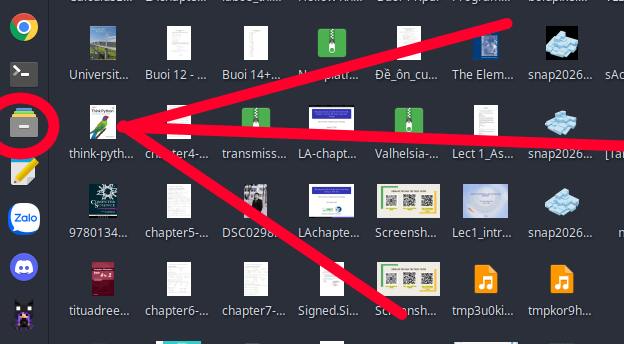
Hình 1: Mở file explorer bằng phím tắt hoặc biểu tượng trên thanh tác vụ
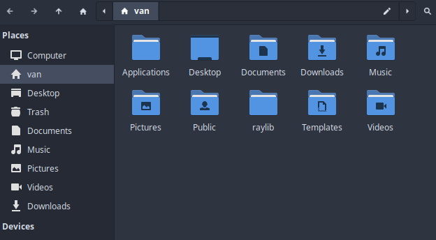
Hình 2: Giao diện sau khi mở
2. Truy cập ổ đĩa/thư mục
Ở cột bên trái, nhấp vào This PC, sau đó nhấp đúp vào một ổ đĩa không phải ổ hệ thống (ví dụ: ổ D: hoặc E:). Nếu chỉ có ổ C:, hãy vào thư mục Documents.
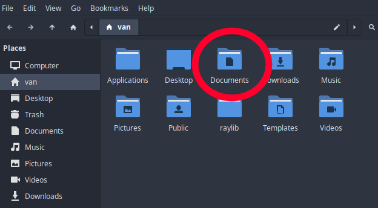
Hình 3: Tìm thư mục Documents trong ổ C:
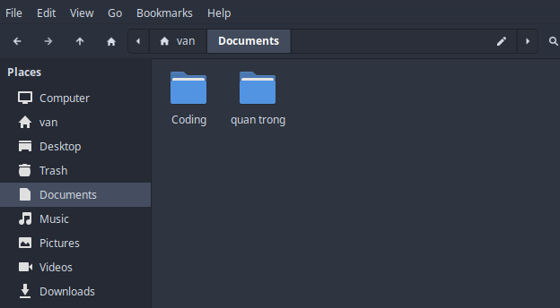
Hình 4: Bên trong thư mục Documents
3. Tạo thư mục mới
Nhấp chuột phải vào một khoảng trống → chọn New → Folder. Đặt tên thư mục là ThucHanh_hotensinhvien (ví dụ: ThucHanh_NguyenHoangVan). Nhấn Enter.
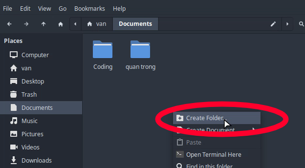
Hình 5: Chọn Create Folder trong menu chuột phải
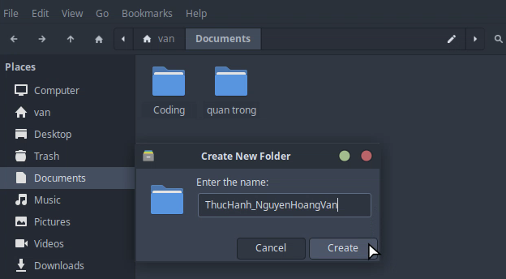
Hình 6: Đặt tên thư mục là ThucHanh_NguyenHoangVan
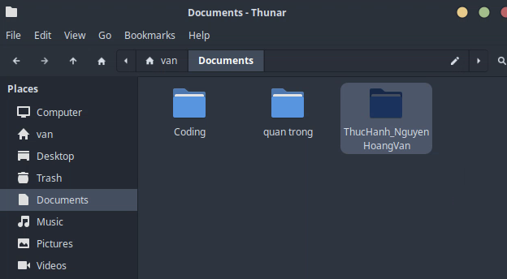
Hình 7: Thư mục đã được tạo thành công
4. Vào thư mục vừa tạo
Nhấp đúp vào thư mục ThucHanh_NguyenHoangVan vừa tạo.
Hình 8: Nhấp đúp vào thư mục ThucHanh_NguyenHoangVan
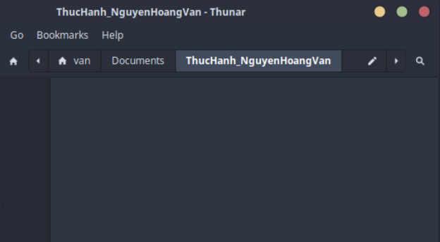
Hình 9: Bên trong thư mục
5. Tạo tệp tin văn bản
Nhấp chuột phải vào khoảng trống → Create Document → Empty File Document. Đặt tên là GhiChu.txt. Nhấn Enter.
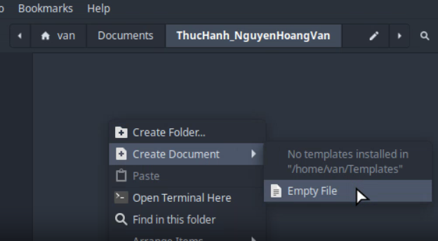
Hình 10: Mở menu chuột phải và tạo file text
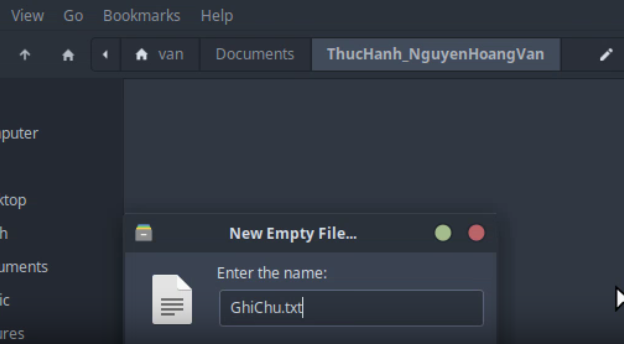
Hình 11: Đặt tên là GhiChu.txt
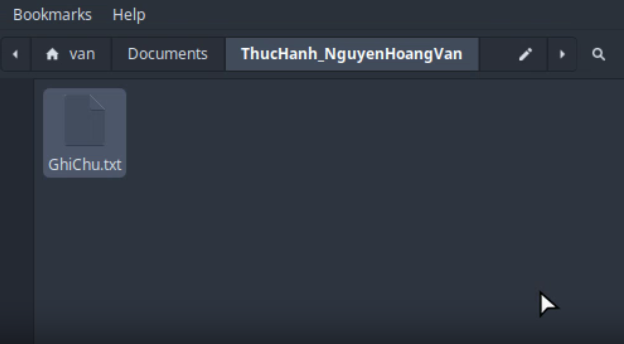
Hình 12: File đã được tạo
6. Đổi tên tệp tin
Nhấp chuột phải vào tệp GhiChu.txt → chọn Rename. Đổi tên thành GhiChuQuanTrong.txt. Nhấn Enter.
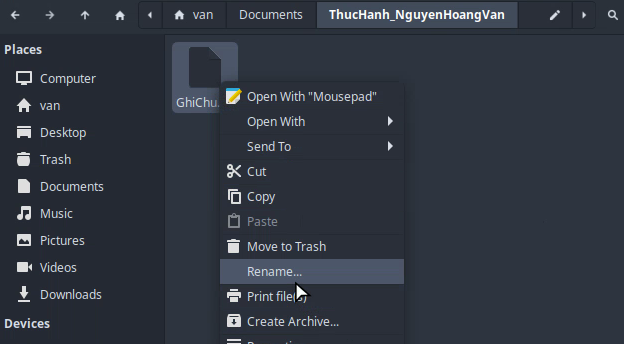
Hình 13: Chọn Rename trong menu chuột phải
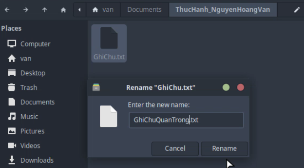
Hình 14: Đổi tên thành GhiChuQuanTrong.txt
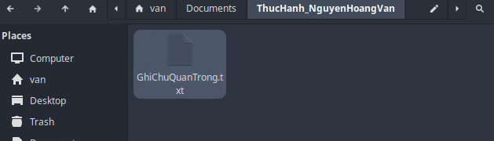
Hình 15: File đã được đổi tên
7. Tạo thư mục con
Trong thư mục ThucHanh_NguyenHoangVan, nhấp chuột phải → New → Folder. Đặt tên là TaiLieu.
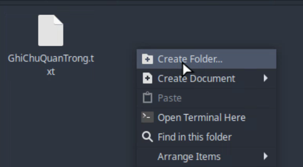
Hình 16: Chọn Create Folder
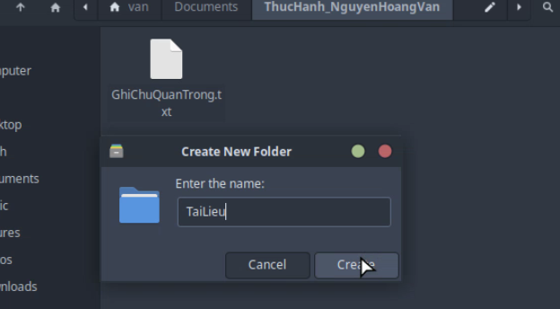
Hình 17: Đặt tên thư mục là TaiLieu
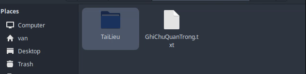
Hình 18: Thư mục đã được tạo
8. Sao chép tệp tin (Copy & Paste)
Nhấp chuột phải vào tệp GhiChuQuanTrong.txt → chọn Copy (hoặc nhấn Ctrl + C).
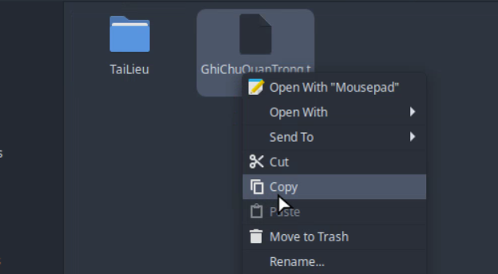
Hình 19: Chọn Copy
Nhấp đúp vào thư mục TaiLieu, nhấp chuột phải vào khoảng trống → chọn Paste (hoặc nhấn Ctrl + V). Bạn sẽ có một bản sao trong thư mục này.
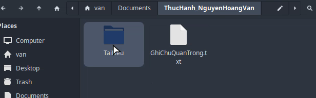
Hình 20: Mở thư mục TaiLieu
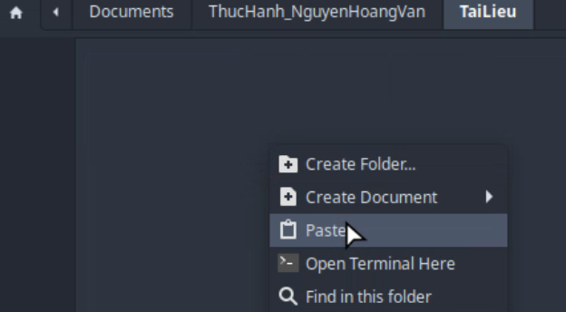
Hình 21: Chọn Paste
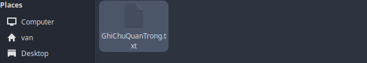
Hình 22: File đã được sao chép thành công
9. Di chuyển tệp tin (Cut & Paste)
Quay lại thư mục ThucHanh_NguyenHoangVan. Tạo một tệp mới tên là DiChuyen.txt.
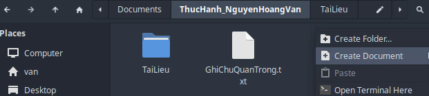
Hình 23: Quay lại thư mục và chọn Create Document
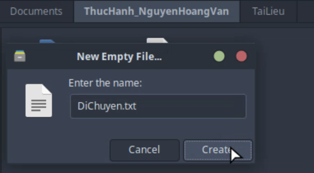
Hình 24: Đặt tên DiChuyen.txt
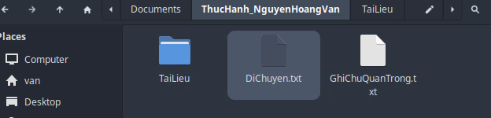
Hình 25: File đã được tạo thành công
Nhấp chuột phải vào tệp DiChuyen.txt → chọn Cut (hoặc nhấn Ctrl + X).
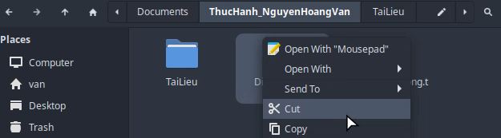
Hình 26: Chọn Cut trong menu chuột phải
Nhấp đúp vào thư mục TaiLieu, nhấp chuột phải vào khoảng trống → chọn Paste (hoặc nhấn Ctrl + V). Tệp gốc sẽ biến mất khỏi vị trí cũ và xuất hiện ở vị trí mới.
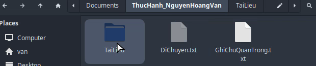
Hình 27: Mở thư mục TaiLieu
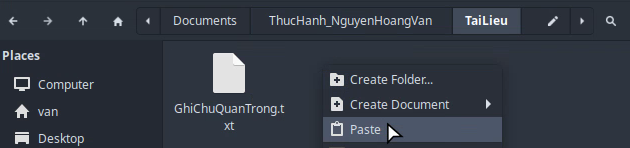
Hình 28: Chọn Paste vào thư mục TaiLieu
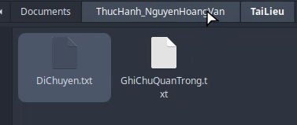
Hình 29: File DiChuyen.txt đã được chuyển sang thư mục TaiLieu
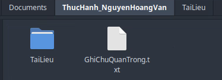
Hình 30: File đã biến mất khỏi thư mục gốc
10. Xóa tệp tin
Trong thư mục TaiLieu, nhấp chuột phải vào tệp GhiChuQuanTrong.txt → chọn Move to Trash. Tệp sẽ được chuyển vào Thùng rác (Recycle Bin).
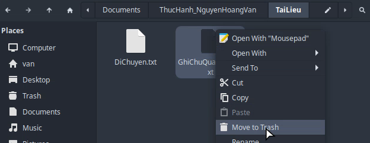
Hình 31a: Chọn Move to Trash
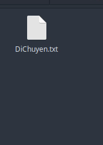
Hình 31b: File đã được chuyển vào Recycle Bin
11. Xóa vĩnh viễn
Chọn tệp DiChuyen.txt, nhấn giữ phím Shift và nhấn phím Delete. Một cảnh báo sẽ hiện ra. Nếu đồng ý, tệp sẽ bị xóa vĩnh viễn mà không qua Thùng rác.
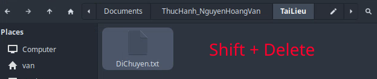
Hình 32: Nhấn phím tắt Shift + Delete
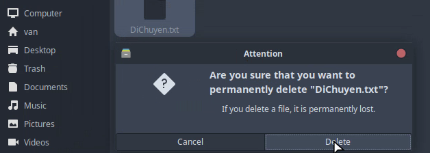
Hình 33: Chọn Delete khi cảnh báo hiện ra
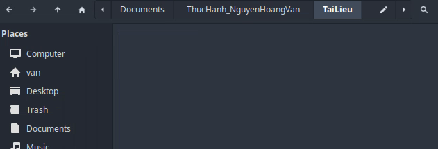
Hình 34: File đã bị xóa vĩnh viễn
12. Khôi phục từ Thùng rác
Tìm biểu tượng Recycle Bin trên thanh tác vụ, nhấp đúp để mở. Tìm tệp GhiChuQuanTrong.txt đã xóa, nhấp chuột phải vào nó và chọn Restore. Tệp sẽ quay trở lại vị trí ban đầu.